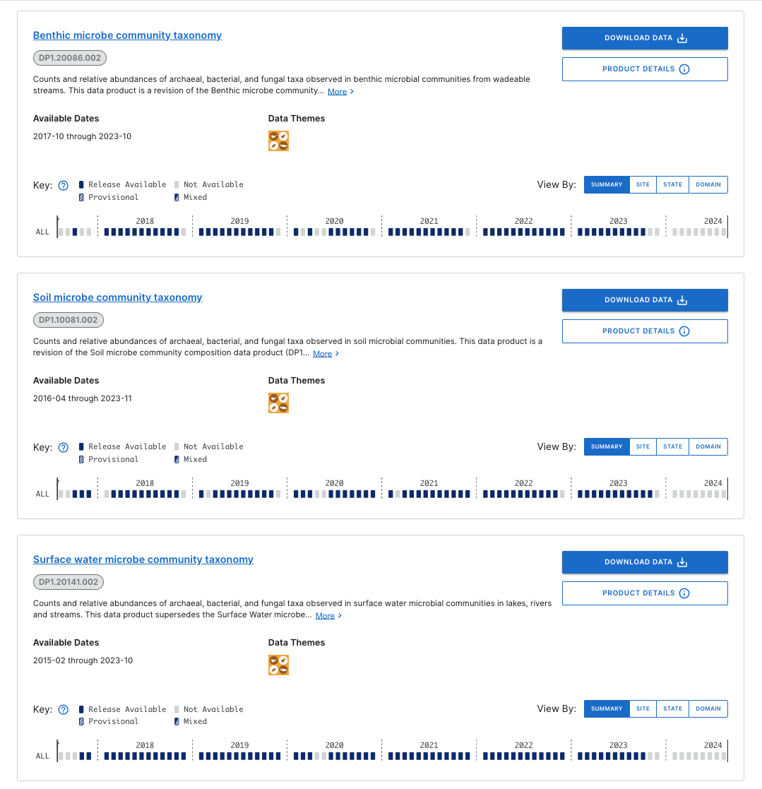

Analyses
This page includes some milestones of my data analysis
Microbe Community Taxonomy data product
The older NEON product ‘Microbe Community Composition’ needed updating, so I overhauled it and created the new version: ‘Microbe Community Taxonomy’. The new version allows for comparison of all samples across years and sites.
To accomplish this I developed a pipeline to process NEON amplicon sequence data using multiple approaches and ran them using Docker images in a Kubernetes engine on the NEON node of the Google Cloud Platform. The results of this analysis comprise over 15000 samples collected over seven years (2018-2024) across all 81 NEON field sites, with thousands of new samples to be sequenced each year. Perhaps more challenging than running the data through the pipeline was organizing the results so as to be flexible for end users to download any number of samples from any year. This required devising new systems to substitute for the sometimes overwhelmed data structures of the existing software.

Population genomics from environmental data
The code (on this repository) was developed for a PhD project at the University of Otago (preprint here). The student collected water from bays and harbours around New Zealand that had populations of fur seals. DNA was extracted from the water samples and probed with hybrid capture baits designed from fur seal mitochondrion. I designed some scripts to identify fur seal haplotypes from mitochondrial genes. Because the samples were environmental, I did not use assembly to construct haplotypes but instead devised a script to match the haplotype of each sequence separately.
Metabarcoding pipeline example
This repository is an example of an amplicon sequence pipeline I used for a recent paper. I have explored multiple approaches to metabarcoding, in both my research and teaching. See the Teaching page for examples of teaching different approaches.